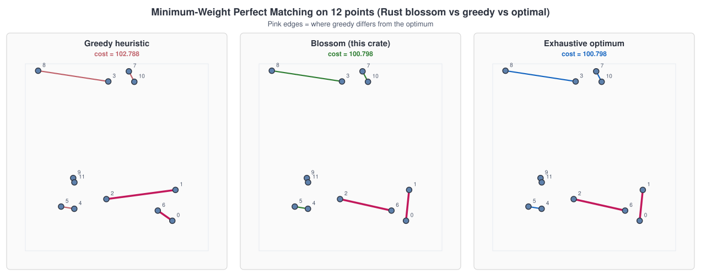
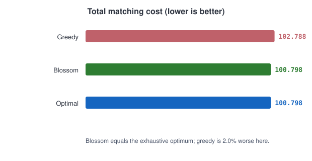
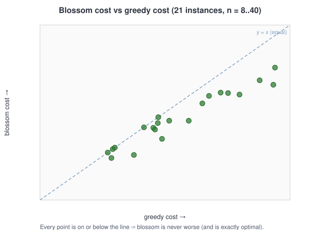
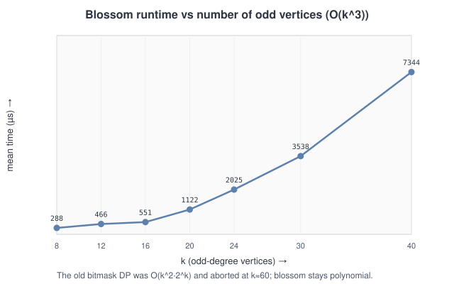
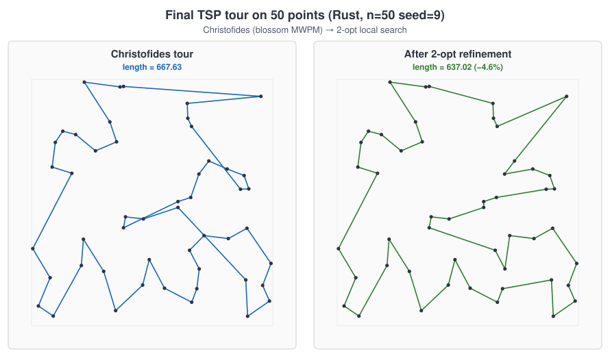
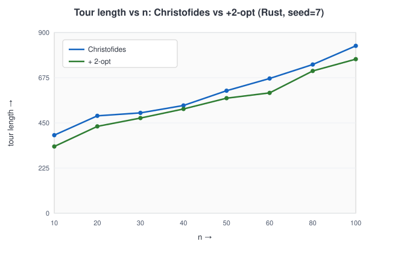
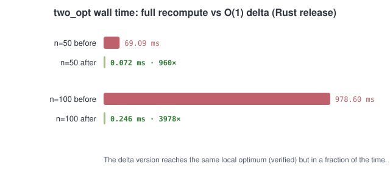

layout: true class: typo, typo-selection --- count: false class: nord-dark, middle, center # 🚗 Making TSP Fast ## Edmonds' Blossom MWPM in Rust & C++ — and the DP that was silently wrong ### 🦀 → ⚙️ → 🚗 @luk036 👨💻 · 2026 📅 --- ### 📋 Agenda .pull-left[ **Part 1 — The Problem** 🧭 - Christofides needs an MWPM - Greedy voids the 3/2 bound ⚠️ - The DP that "worked" was wrong 🐛 **Part 2 — The Right Algorithm** 🏆 - Edmonds' blossom (1965) - Which algorithm when 📊 - Blossom V ] .pull-right[ **Part 3 — Rust** 🦀 - The `mwmatching` crate - Min cost via max weight 🔧 - The reachability bug 🔍 **Part 4 — C++** ⚙️ - Vendoring Joris's blossom - Warning suppression 🛡️ - Removed dead code 🧹 **Part 5 — TSP Results** 🚗 - Final tour & 2-opt 🗺️ - 955× / 3986× `two_opt` ] --- class: nord-light, middle, center ## 🧭 Part 1 — The Problem --- ### 🚗 Christofides in 60 Seconds .mermaid[ <pre> graph LR MST["1. Minimum\nSpanning Tree"] --> ODD["2. Odd-degree\nvertices"] ODD --> MWPM["3. Min-weight\nperfect matching"] MWPM --> EULER["4. Eulerian\nmultigraph"] EULER --> CIRCUIT["5. Eulerian\ncircuit"] CIRCUIT --> TOUR["6. Shortcut →\nHamiltonian cycle"] style MST fill:#e3f2fd,stroke:#1565c0,stroke-width:3px style ODD fill:#e3f2fd,stroke:#1565c0,stroke-width:3px style MWPM fill:#f8bbd0,stroke:#c2185b,stroke-width:3px style EULER fill:#fff9c4,stroke:#f57f17,stroke-width:3px style CIRCUIT fill:#fff9c4,stroke:#f57f17,stroke-width:3px style TOUR fill:#c8e6c9,stroke:#2e7d32,stroke-width:3px </pre> ] > The only **NP-hard-flavoured** step is step 3 — and it decides the guarantee. 🎯 --- ### 🧩 The Missing Piece: MWPM We must pair up the odd-degree vertices (there is always an **even** number): $$ \min_{M} \sum_{\{i,j\}\in M} d_{ij}, \qquad \text{every vertex in exactly one pair} $$ - The graph is the **complete metric closure** on the odd set - An **exact** MWPM is required for the $3/2$ bound - A heuristic matching ⇒ the bound is **void** ⚠️ > Christofides is only $3/2$ if step 3 is a **true minimum** perfect matching. 🏆 --- ### 📉 Why Greedy Isn't Enough <p align="center"><p></p></p> > Greedy takes the locally-cheapest pair and can strand vertices; blossom is **exactly optimal**. 🎯 --- class: nord-light, middle, center ## 🏆 Part 2 — The Right Algorithm --- ### 🏆 Edmonds' Blossom (1965) Minimum-weight perfect matching on a **general** graph needs odd-cycle contraction: $$ \text{general graph} \;\Rightarrow\; \text{blossoms must be contracted} \;\Rightarrow\; \text{Edmonds} $$ .mermaid[ <pre> graph TD Q["Matching on a graph"] Q -->|"bipartite"| H["Hungarian\nO(n³)"] Q -->|"general"| B["Blossom (Edmonds)\nO(n³)"] B --> V["Blossom V (2009)\nstate of the art"] style Q fill:#e3f2fd,stroke:#1565c0,stroke-width:3px style H fill:#fff9c4,stroke:#f57f17,stroke-width:3px style B fill:#c8e6c9,stroke:#2e7d32,stroke-width:3px style V fill:#c8e6c9,stroke:#2e7d32,stroke-width:3px </pre> ] > Kolmogorov's **Blossom V** is the practical state of the art. 🏆 --- ### 📊 Which Algorithm When? .font-sm[ | Regime | Algorithm | Complexity | Exact? | |:-------|:----------|:-----------|:-------| | General | Blossom (Edmonds) / Blossom V | $O(n^3)$ | ✅ | | Small $n$ | Bitmask DP | $O(n^2\,2^n)$ | ✅ | | Bipartite | Hungarian | $O(n^3)$ | ✅ | | Fallback | Greedy | $O(n^2\log n)$ | 2-approx ⚠️ | ] > Blossom beats the DP for every practical $n$: $n^3 \ll n^2\,2^n$. 📐 --- ### 💸 The Cost of Greedy <p align="center"><p></p></p> > On this 12-point instance greedy is **2.0 %** worse — and it carries no guarantee. 📉 --- class: nord-light, middle, center ## 🦀 Part 3 — Rust --- ### 🦀 The Crate: `mwmatching` ```toml mwmatching = "0.1.1" ``` - MIT, **zero dependencies**, a single file - A port of Joris van Rantwijk's $O(n^3)$ blossom - API: `Matching::new(edges).max_cardinality().solve()` > `integer-blossom` was rejected — it needs **rustc 1.87**; this crate targets 1.70. 🚧 --- ### 🔧 Minimum Cost via Maximum Weight `mwmatching` **maximizes** weight. Shift every cost so it stays positive: $$ w_{ij} \;=\; {\color{#2e7d32} C} - {\color{#bf616a} d_{ij}}, \qquad C > \max_{i,j} d_{ij} $$ Then $\max \sum w = \tfrac{k}{2}\,C - \min \sum d$, so: $$ \arg\max_{M} \sum_{\{i,j\}\in M} w_{ij} \;=\; \arg\min_{M} \sum_{\{i,j\}\in M} d_{ij} $$ > Negated weights + max-cardinality misbehaved; the positive shift fixed it. 🔧 --- ### 💥 The DP That Was Silently Wrong The old bitmask DP only reached masks **containing vertex 0**: .mermaid[ <pre> graph LR M0["mask = 0"] -->|"pair (0, j)"| M1["mask = {0, j}"] M1 -->|"pair (1, j')"| M2["mask = {0, j, 1, j'}"] M2 --> DOTS["… always contains 0"] DOTS --> BAD["dp[full − {0, j}] = INF ❌"] style M0 fill:#e3f2fd,stroke:#1565c0,stroke-width:3px style M1 fill:#e3f2fd,stroke:#1565c0,stroke-width:3px style M2 fill:#e3f2fd,stroke:#1565c0,stroke-width:3px style DOTS fill:#fff9c4,stroke:#f57f17,stroke-width:3px style BAD fill:#f8bbd0,stroke:#c2185b,stroke-width:3px </pre> ] > `dp[full]` was correct, but reconstruction peeled a pair whose predecessor was `INF` — yielding a **wrong** matching. 🐛 --- ### 🔍 Ground Truth: Blossom vs the Broken DP On 12 points (seed 5): .font-sm[ | Method | Cost | |:-------|:-----| | Greedy heuristic | 102.788 | | **Blossom (this crate)** | **100.798** | | Exhaustive optimum | **100.798** | | Old bitmask DP | 57.505 ❌ | ] A matching **cheaper than optimal** is impossible: $$ 57.505 \;<\; {\color{#2e7d32}100.798} \;=\; \text{OPT} \;\Rightarrow\; \text{bug} $$ > The exhaustive ground truth matched **blossom**, not the DP. 🎯 --- ### ✅ Blossom Equals the Optimum <p align="center"><p></p></p> > Every point lies on or below $y = x$ — blossom is **never worse**, and exactly optimal. 🎯 --- ### ⏱️ Polynomial Time <p align="center"><p></p></p> > $O(k^3)$ vs the DP's $O(k^2\,2^k)$ — which aborted near $k \approx 60$. 🚀 --- ### 🧪 Rust Verification .font-sm[ | Check | Result | |:------|:-------| | `cargo test --all-features --workspace` | 252 passed ✅ | | `test_blossom_matches_brute_force` | blossom == exhaustive ✅ | | `test_christofides_large_no_crash` | n = 100 ok 🩹 | | `cargo clippy` | clean 🧹 | | `cargo fmt --check` | no diffs ✅ | ] > The old DP is **gone** — blossom also dominates it asymptotically. 🧹 --- class: nord-light, middle, center ## ⚙️ Part 4 — C++ --- ### ⚙️ Vendoring Joris's Blossom The C++ port had the **same** broken DP plus a greedy fallback. We vendored a real blossom: .mermaid[ <pre> graph LR SRC["git.jorisvr.nl\nmaximum-weight-matching"] --> HDR["mwmatching.hpp\n+ 2 helper headers"] HDR --> AD["detail/blossom.hpp\nadapter"] AD --> TSP["tsp.hpp\nChristofides"] AD --> HAD["hadlock.hpp\nMAX-CUT"] style SRC fill:#e3f2fd,stroke:#1565c0,stroke-width:3px style HDR fill:#d1c4e9,stroke:#6a1b9a,stroke-width:3px style AD fill:#c8e6c9,stroke:#2e7d32,stroke-width:3px style TSP fill:#c8e6c9,stroke:#2e7d32,stroke-width:3px style HAD fill:#c8e6c9,stroke:#2e7d32,stroke-width:3px </pre> ] - MIT (© 2023–2024), **3,621 lines**, header-only, templated on a signed weight type - Works with `double` and `long`; ships `adjust_weights_for_maximum_cardinality_matching` 🎯 --- ### 🧱 The Adapter & Warning Suppression ```cpp #pragma warning(push, 0) // MSVC /W4 /WX #include <xnetwork/detail/mwmatching/mwmatching.hpp> #pragma warning(pop) ``` - Same $w = C - \text{cost}$ transform as Rust - Vendored dir carries a `DisableFormat` `.clang-format` - `LICENSE.txt` preserves the MIT notice 📜 > Third-party code shouldn't have to fight the project's `/WX`. 🛡️ --- ### 🧹 Removed Dead Code .font-sm[ | File | Change | |:-----|:-------| | `tsp.hpp` | `greedy_min_weight_matching` → blossom | | `hadlock.hpp` | exact/greedy dispatch → blossom | | `hadlock.cpp` | deleted `exact_mwpm`, `greedy_mwpm` | | `test_tsp.cpp` | + blossom-optimality test | ] - xmake: **104 tests pass**, MSVC `/W4 /WX` clean ✅ - No new clang-format violations 🧹 > The C++ `exact_mwpm` had the **same** reconstruction bug as the Rust DP. 🐛 --- class: nord-light, middle, center ## 🚗 Part 5 — TSP Results --- ### 🗺️ The Final Tour (n = 50) <p align="center"><p></p></p> > Christofides **667.63** → 2-opt **637.02** (−4.6 %); both are valid Hamiltonian cycles. 🗺️ --- ### 📈 Tour Length vs n <p align="center"><p></p></p> > 2-opt improves every instance: −14.5 % at n = 10, −7.9 % at n = 100. 📉 --- ### ⚡ `two_opt`: 955× / 3986× Faster <p align="center"><p></p></p> > The $O(1)$ delta replaced an $O(n)$ full recompute per candidate move. 🚀 --- ### 🎓 Lessons .mermaid[ <pre> graph TD Q["A fast heuristic can still be wrong"] --> A["greedy: no 3/2 bound ⚠️"] Q --> B["DP: right table, broken reconstruction 🐛"] Q --> C["blossom: exact + polynomial ✅"] C --> D["verify against a brute-force oracle 🧪"] style Q fill:#e3f2fd,stroke:#1565c0,stroke-width:3px style A fill:#f8bbd0,stroke:#c2185b,stroke-width:3px style B fill:#f8bbd0,stroke:#c2185b,stroke-width:3px style C fill:#c8e6c9,stroke:#2e7d32,stroke-width:3px style D fill:#c8e6c9,stroke:#2e7d32,stroke-width:3px </pre> ] - "It passes the tests" ≠ "it's correct" — the bound test passed with a **wrong** matching 🔍 - Always keep an **independent oracle** for small $n$ 🧪 --- ### 📜 Artifacts From This Session .font-sm[ | Repo | Artifact | Status | |:-----|:---------|:-------| | `luk036/netlistx-rs` 🦀 | `feat/blossom-mwpm` · `mwmatching` crate | branch | | `luk036/xnetwork-cpp` ⚙️ | `feat/blossom-mwpm` · vendored blossom | branch | ] - Rust: **252** tests, clippy + fmt clean ✅ - C++: **104** tests, MSVC `/W4 /WX` clean ✅ - 7 SVG figures generated from the real implementation 📊 > Blossom fixes correctness **and** speed. 🎉 --- ### 🧠 Key Takeaways **Algorithm** 🏆 - MWPM on general graphs ⇒ **Edmonds' blossom** (Blossom V in practice) - Greedy is a 2-approximation — it voids the $3/2$ bound ⚠️ - Blossom beats the bitmask DP for every practical $n$ 📐 **Engineering** 🛠️ - Keep an independent oracle; the bound test lied 🧪 - Vendor permissive MIT code with its notice + warning guards 📜 - Shift costs positive to reuse a max-weight solver 🔧 **Results** 🚀 - Rust: 252 tests, exact MWPM, polynomial time - C++: 104 tests, dead code removed - TSP: 2-opt −14.5 %…−4 %, `two_opt` **955×–3986×** faster --- count: false class: nord-dark, middle, center # 🙋 Q&A **Making TSP Fast — Edmonds' Blossom MWPM** ### Questions? Discussion? 💬 --- count: false class: nord-dark, middle, center # 👏 Thank You ## Blossom: exact, polynomial, and finally correct. 🎯 Slides built with Remark.js 🎉 | KaTeX 📐 | Mermaid 🧩 | Nord Theme 🌙